Project: Mobile navigation app for pedestrian navigation.
My role: Visual design, Interaction design, Prototype development, Front-end development
Where and when: Silica Labs Software Corp | Oct 2014 - Present
Landmark is a mobile application for walking directions with step-by-step photos of geotagged landmarks.
(1) Navigation Apps Are Made for Cars & Bikes: Though almost every smartphone user relies on navigation apps, most navigation applications are car-centric, rooted in maps and driving, not landmarks and walking.
(2) Confusion & Time: It takes a few frustrating moments for your app to calibrate your new location. We often start walking and realize the blue dot on the map app is going in the wrong direction, and turn around, staring at our blue dot on a screen.
(3) Preference for Landmarks: A large number of people prefer navigation via landmarks over maps. This entire market segment, which research suggests skews female, has to rely on mapping applications anyway. 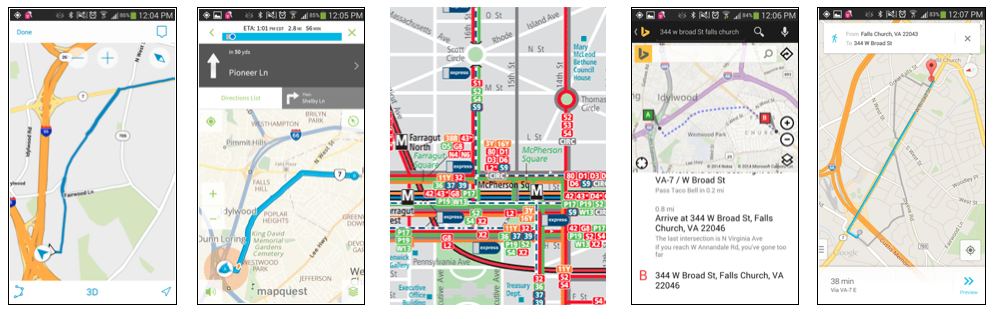We wanted to gather preliminary feedback and investigate how people navigated and what pain points they felt while navigating on foot. Fifty in-person interviews and hundreds of online surveys reveal a segment that intensely wants landmark-based directions. The following quotes are representative.
“I’m a visual learner. I would love details on buildings, streets or landmarks I will pass on my route.”
“I don’t know what 75 feet away vs. 0.3 miles is. I don’t have a gauge for how long that’s going to take. Those directions are confusing to me.”
“It’s hard for me to read where I am on map on my smartphone since I have to zoom in so much. My blue dot is in the wrong spot so I end up walking the wrong way.”
“I hate navigating because it’s frustrating trying to figure out which way to go on a sidewalk full of people. When it’s dark at night, I feel unsafe walking with my phone and map app out.”
“All map apps look the same. Maps are also designed in a birds-eye view... but we aren’t birds.”
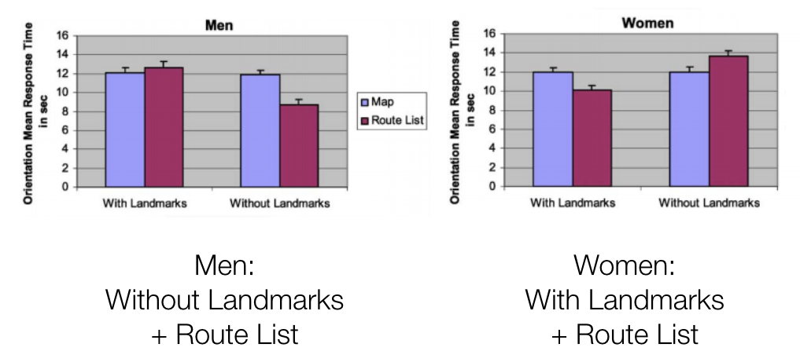After gathering insights about how pedestrians navigate and the pain points they experience along the way, we began prototyping various possibilities for the core user experience. Below we showcase a few, showing early sketches for how users would navigate using Landmark.
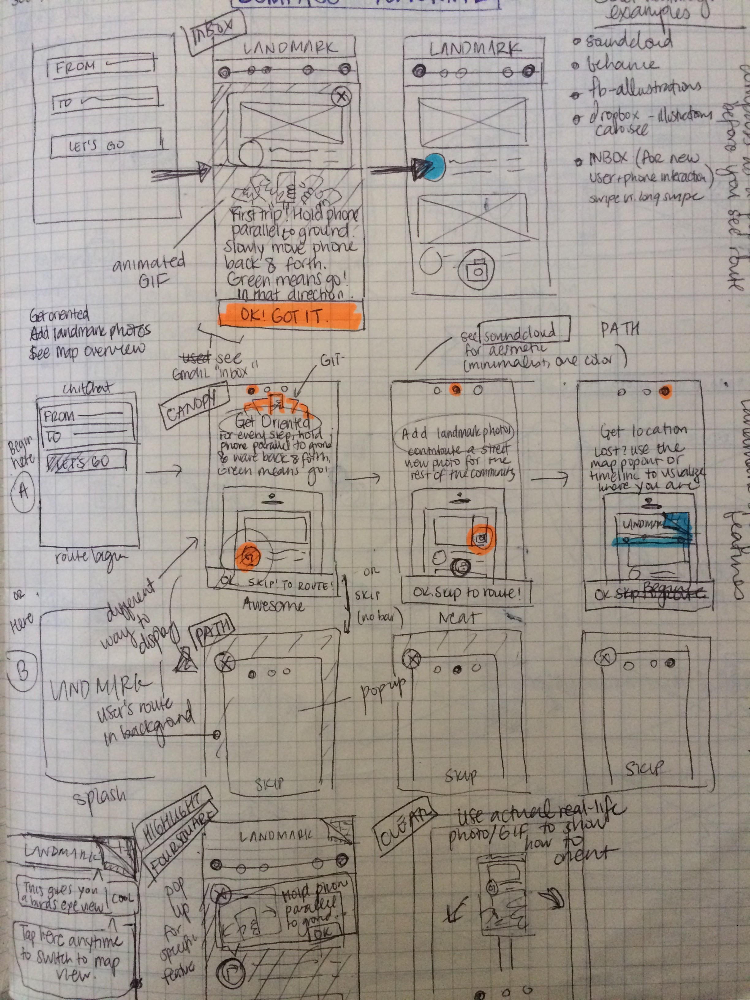 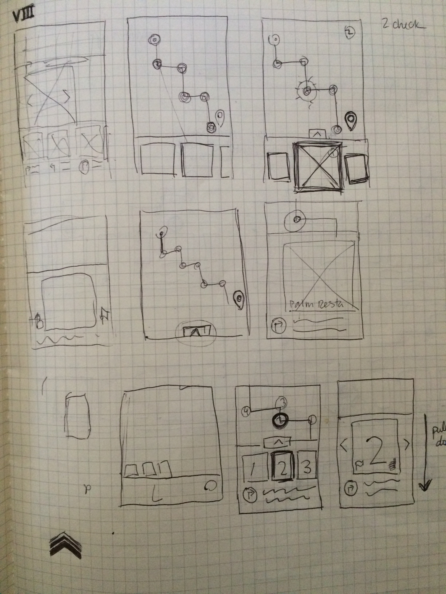 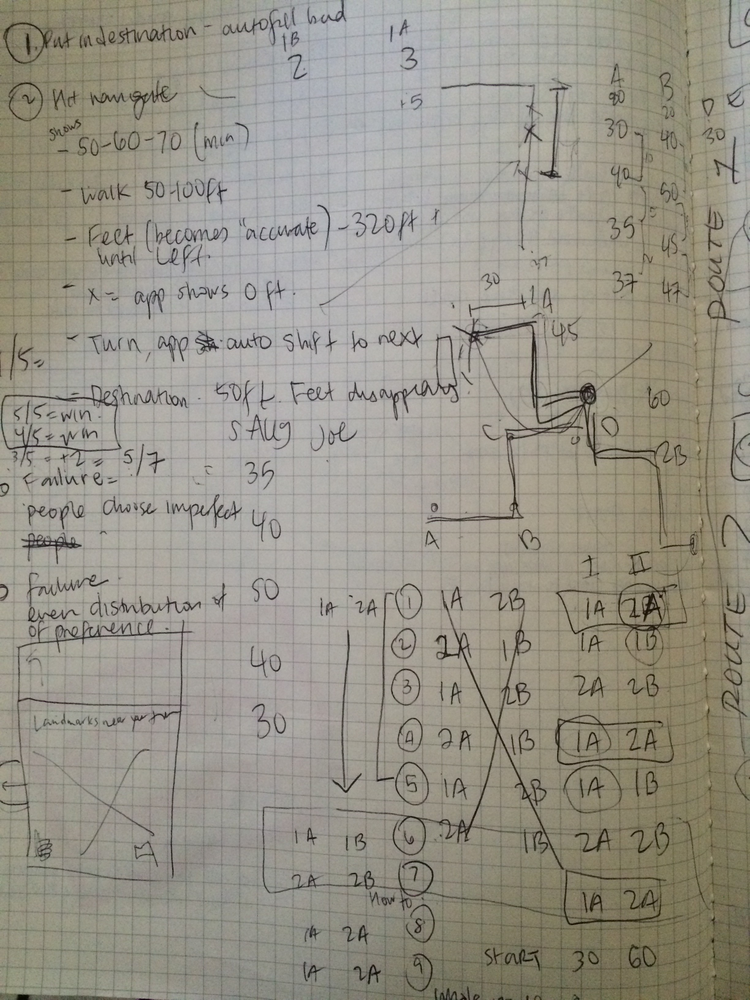We focused on gathering helpful photos & designing UX that is more useful to some users than existing applications. Based on user feedback from our sketches and identified pain points, we began testing quick mockups of concepts that seemed to resonate with users. We met one-on-one with individuals, found users on Craigslist to walk with these prototypes in exchange for cash or Chipotle burritos. This stage of the process took months to refine and ensure we got the core user experience down before beginning to code any of these features.
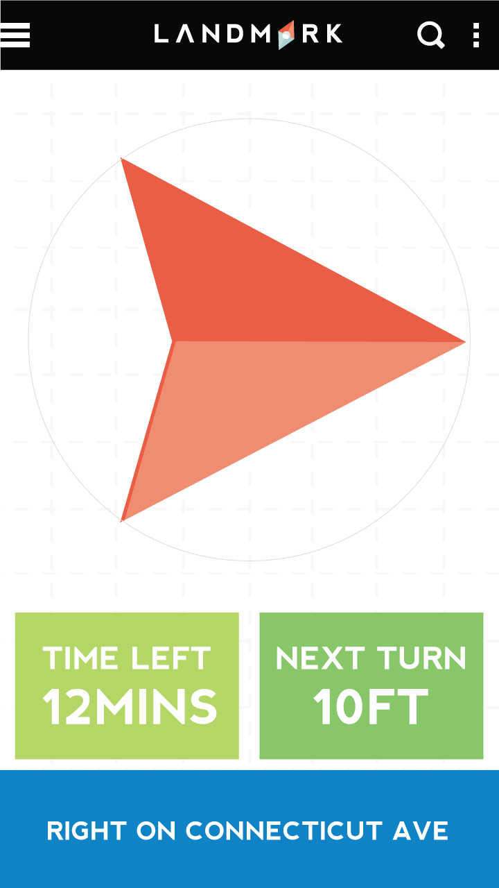 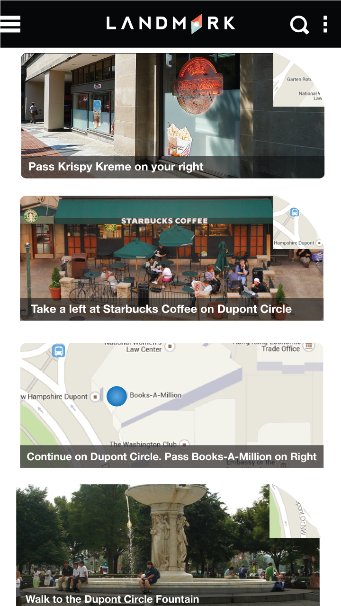 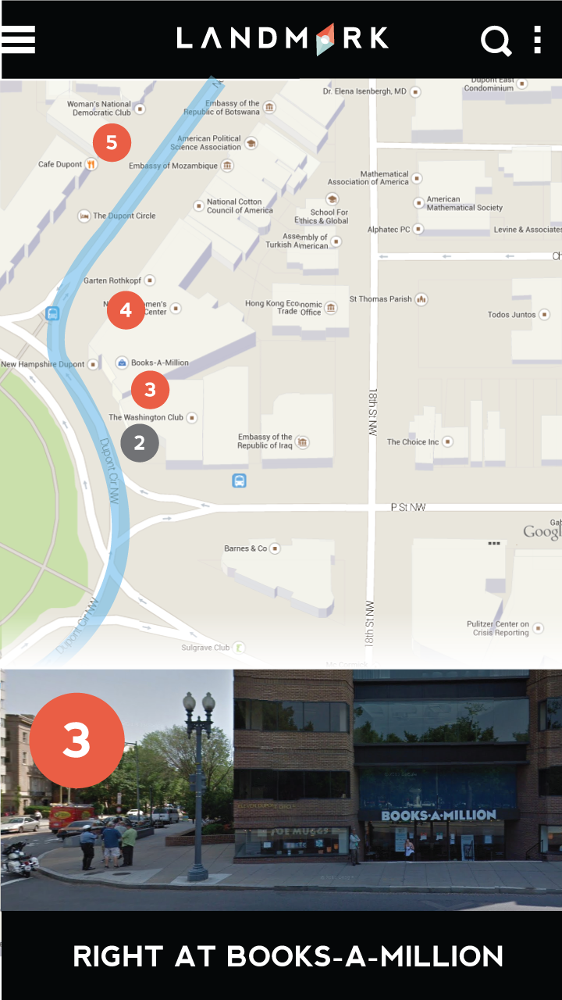 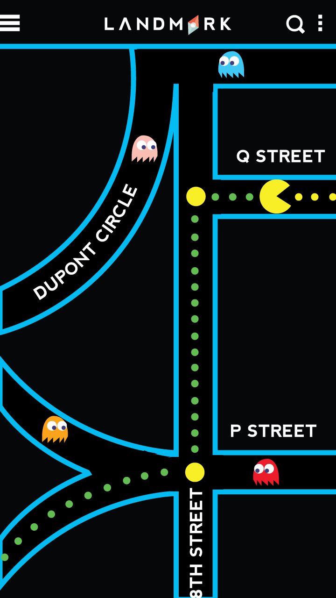Over several weeks, we went on simulated routes and tweaked the prototype daily, designing with user feedback and interactions from the previous day. We narrowed it down to 2 designs that users found intuitive and enjoyed. We conducted more simulated walking routes, timed them and determined which design allowed users to orient and navigate easily and effectively. In total, we have interviewed or walked with over 300 people to validate.
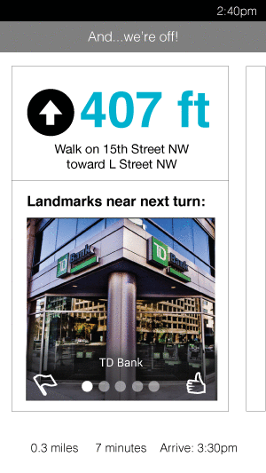 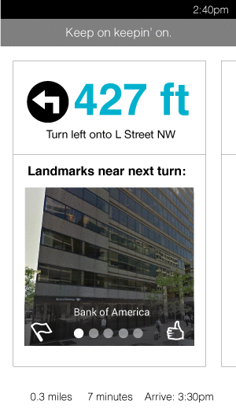 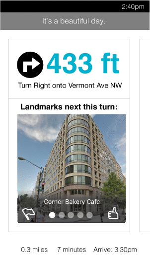One of the limitations of using static designs for usability studies is the lack of real-time information that could be served to the user. A few concrete examples include: The countdown of feet for each step, the user's current location on a map and the update of route information such as minutes left and arrival time. In order to get around this, we predetermined a route and timed each step. Humans walk at a moderate pace of 100 steps per minute (Athleteinme.com). The average person's stride length is approximately 2.5 feet (The Walking Site). We created GIFs for each screenshot with the approximate time each step would take in"real-time" in order to simulate the experiment in the most realistic way possible. The negative aspect to this GIF approach to distance countdowns meant that participants put too much trust in the accuracy and it ended up throwing them off in case something happened in the route.
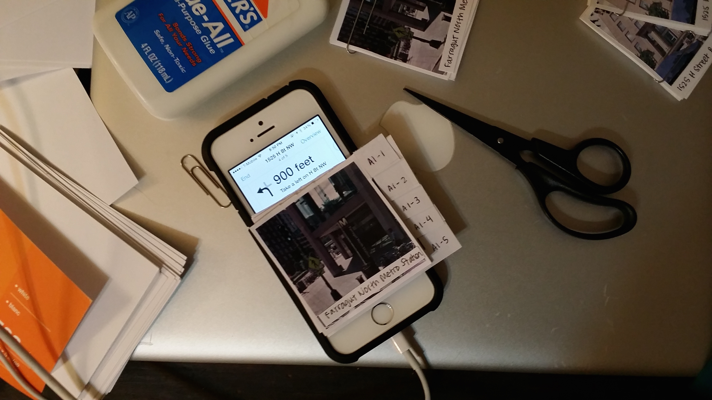We came up with way to circumvent the issue of mockups distracting the user by looking "too real" with the paper prototyping. In order to simulate one of the mockups in a walk test environment, we designed a route and printed photos of landmarks that users would pass and have to switch out at each pivot. The advantage of using printed photos is important when presenting these concepts or ideas to stakeholders and participants because they often will perceive hi-fidelity comprehensive layout as complete and put more trust into their functionality. With this method, we conveyed the concept but indicated to the participant not to put too much trust into accuracy.
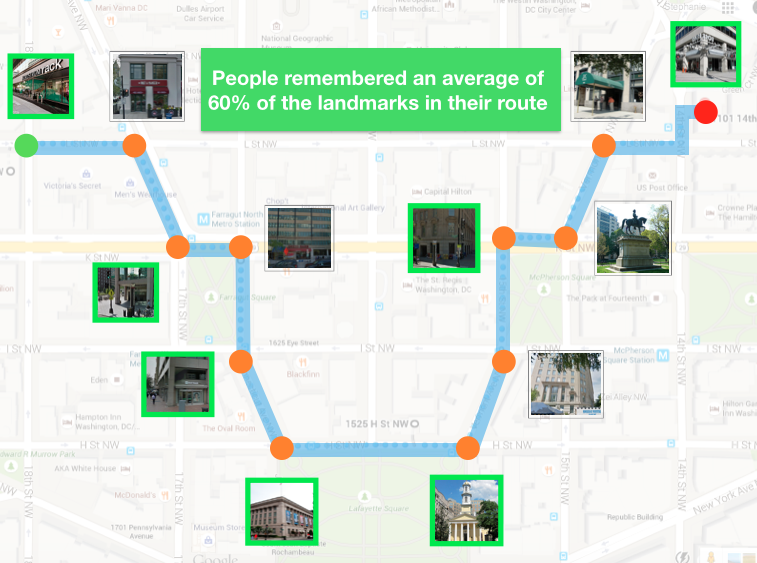This is one of the routes we designed in downtown Washington, DC. We specifically chose this symmetrical route to be able to A/B test two design methods. Each experiment included the same number of turns and level of difficulty along with a similar total distance and time. After the usability studies, we compared the data and time it took for each version we tested to determine which was more effective for walking directions. Something interesting we learned was that with this type of navigation, users remembered an average of 60% of the landmark images after completing the route, a rate much higher than when users navigated using a map.
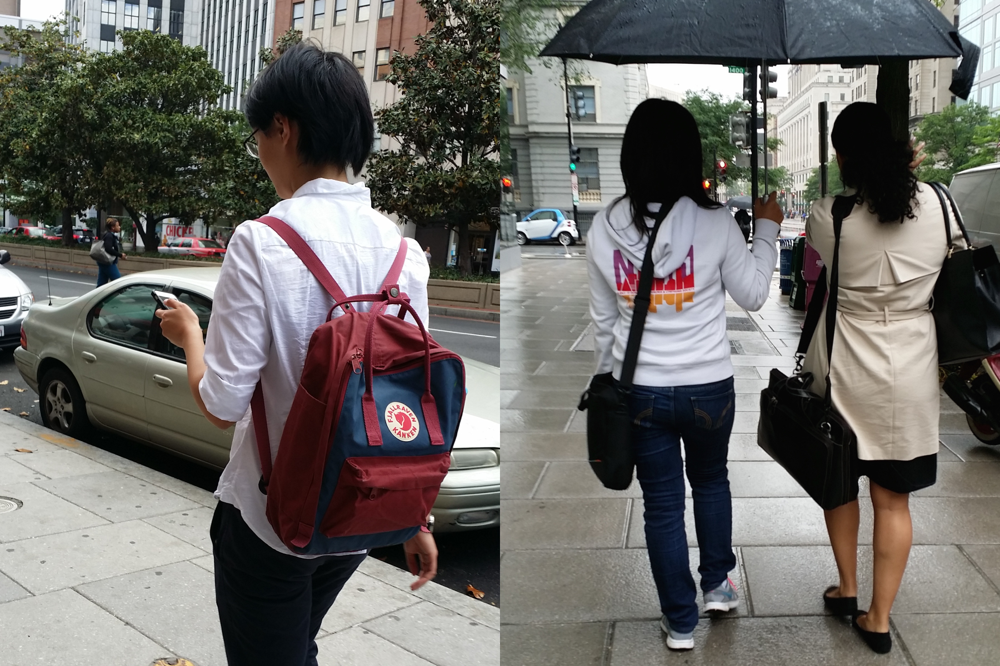For months, we conducted walkability studies for months in the rain, arctic tundra and summer heat in order to understand how users think while navigating to a certain destination. In order to determine whether a design was successful nor not, we would lay out 5 success metrics such as:
Landmark is a new way of getting on point A to point B without relying on compasses and paper maps. We wanted the logo to reflect a cleaner, simpler way of navigating. While incorporating a famous landmark in the logo seemed intuitive at first, many users immediately thought the app involved adventure and tourism in a new city instead of an alternative way of getting your everyday directions. After dozens of iterations, we decided to go with a fresh blue and red toned compass needle with fresh, modern typography. It emulated the simplicity of Landmark.
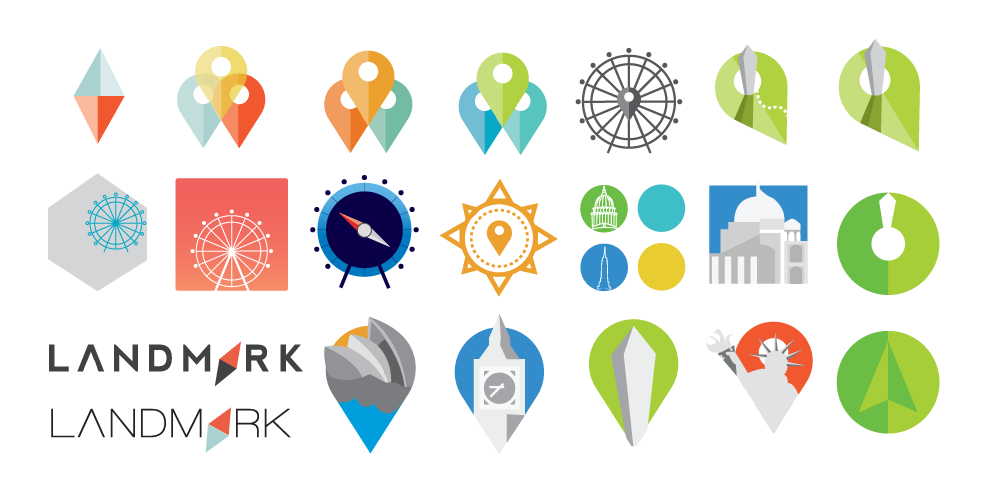Landmark is now available on both iPhone and Android and is in beta testing.
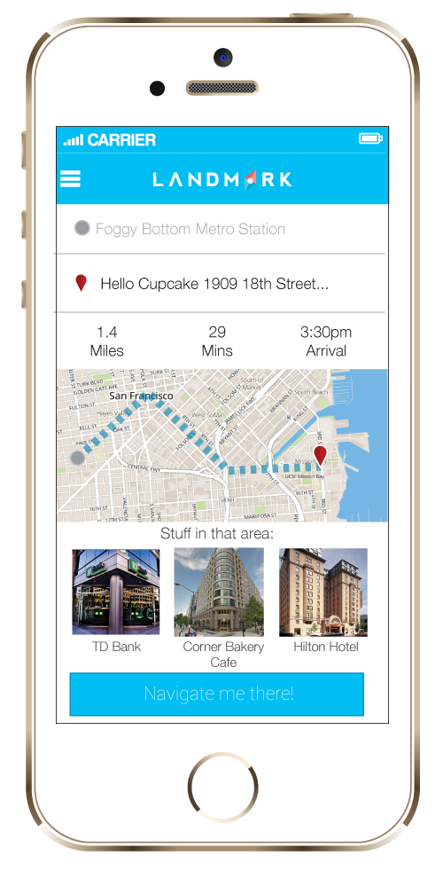 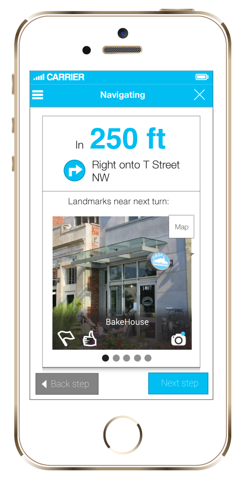